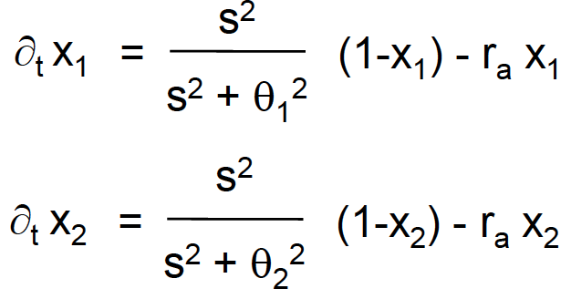

Lesson 6 : Division of Labor (Threshold based and Market Based algorithms)
Motivation and Overview
Division of labor means that there is a potential redundancy in the role/contribution of individuals and coordination in role/task allocation helps in decreasing redundancy and increasing efficiency as a group.
Obvious sign : presence of castes (physical, temporal, behavioral).
number of individuals performing the different tasks are subject to constant change
Proportions of individuals vary in response to internal or environmental perturbations
True even when morphological differences or irreversible ageing takes place
Fixed threshold model
2
Designing a macroscopic model :
Assumptions :
macroscopic, continuous time
Fixed thresholds set response to stimuli
nonspatial model (equiprobable exposure of individuals to to the stimuli)
1 task, 2 castes (minor, major)
Reponse probability = \(T_{\Theta_i}(s) = \frac{s^n}{s^n+\Theta_i^n}\) where
\(s\) is the intensity of the stimulus associated with the task,
\(\Theta_i\) the response threshold of caste \(i\) to the task,
\(n\) a non-linearity parameter
3
Nomenclature :
4
Dynamics of the fraction of active individuals in each caste
5
where \(r_a\) is the rate of task abandoning, \(1 \over r_a\) the average time spent by an individual performing a task before abandoning it.
Dynamics of the demand associated with the task
6
with \(\delta\) the rate of stimulus increase (demand common to both casts), \(\alpha\) the normalized effectiveness rate of the individual contribution on teh task.
Variable Threshold Model
Individual Behavioral Algorithm
7
where :
\(i\) is the cast index
\(s\) is the intensity of the stimuli
\(\Theta_i\) is the response threshold (bounded)
\(\xi\) incremental learning parameter
\(\phi\) incremental forgetting parameter
gives a systems of differential equations : \(\partial_t x_i = T_{\Theta_i}(s) (1-x_i) - r_ax_i\)
Threshold-Based Control of Aggregation2 : Special type of aggregation: linear structure assembly; only seeds at the tips of a cluster can be manipulated. This method makes sense to model the evolution of aggregations (as more are aggregated, there is more competition for the remaining objects to pick up)
Implementation :
1 task (aggregation) \(\rightarrow\) 1 threshold per robot
Fully distributed algorithm
Robot have the same capabilities \(\Rightarrow\) same thresholds
Use a probabilistic response (\(\approx\) deterministic + noise)
Stimulus = time to find an object to manipulate
Special demand evolution with \(\delta = 0\) and \(s(0) = S_0\)
Market Based algorithms
Market model
resources have precise worth and can be traded
Allocation uses auctions
Accomplishing a task brings a reward
Consuming resources incurs a cost
GOAL maximize profit
Formal model
Team has
A decomposable objective (a set of locations)
Limited set of resources (e.g. time, energy, sensors)
A global objective function \(C\)
A local utility (or cost) function \(U_j\)
A mapping \(M\) for credit assignment (mapping \(U \leftrightarrow C\) )
Market mechanism for redistribution
Auctions and bidding
Auctions can concern a single task, a combination of tasks, or multiple tasks. They can be settled through costs (lowest bidder wins to minimize global cost) or utilities (highest bidder wins to maximize global utility).
Cost vs Utilities
cost-based:
minimize global cost function
lowest bidder wins
Utility based:
quality, value - cost:
more/less important tasks
more/less capable robots
max global utility
highest bidder wins
Computational Complexity and Uncertainty
Task valuation
They might require solving complex problems (e.g. TSP), so we need heuristics and approximations (if the bids are inaccurate the resources are poorly allocated).
Uncertainty
Can be anywhere (local state, teammate state, task state, environment, …). The solutions are heuristics, learning (use priors about environment), solution repair (re-auction tasks to teammates).
demonstrated on perimeter sweeping, constrained exploration
relatively new
Market based vs Threshold based
Threshold
Market
Totally distributed
Exploit centralization
Simple
Complex
Non-directed communication
Direct communication
Little task knowledge
Lots of task knowledge
Use few resources
Use lots of resources
Tasks = Behaviors / Activities
Tasks = specific jobs
Poorer solutions
Better solutions
Bio inspired
Eco-inspired
Event handling
Market based approach
Assign event to nearest robot
Auction : Sequentially ordered
Bid : distance to nearest event
Reserve price : \(d_{expected}\)
Threshold based approach
Robot handles closest event w/o duplicating work
\(\Theta_e = \frac{1}{d_{expected}}\)
\(\sigma = \frac{1}{d_e}\)
deterministic response
random walk
Results
Quality of information:
Markets “worth it” only with good information
Else, thresholds: same quality, less expensive
Markets worse in some respects
Robust to range of information
Markets successful with short comms
Both successful with short perception range
Take - Home messages
Existence of several castes in natural societies (age-based, behavioral, morphological) are evident signs of division of labor
From macroscopic models for natural systems to microscopic algorithms for artificial systems: non-trivial design choices must be carried out
Two different classes of threshold-based algorithms: fixed and variable thresholds
Market-based algorithms exploit points of centralization and networking for allocating more efficiently tasks
Market-based algorithms can be more efficient than threshold-based ones at the price of more resources used; market-based allocation works efficiently only with accurate information but do not suffer too much about short communication ranges